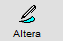

É uma operação fiscal que define se a nota emitida recolhe ou não impostos, movimenta ou não estoque
e
financeiro.
+Procedimentos para cadastrar naturezas de saída:
No Sistema:
- Clique no campo descrição, informe um nome para a natureza.
- Informe se envolve itens (S/N), se será à prazo ou à vista (S/N), CFOP para dentro e fora do estado,
se
movimenta estoque (S/N), se gera custo médio (S/N) e o tipo: Transferência(T), Compra(C), Outros(O).
- Tecle ENTER e será salvo automaticamente pelo sistema.
OBS.: As informações sobre cada campo estão no final da página.
+Como alterar os dados de uma natureza de saída?
Selecione a natureza e clique em

e será exibida a
seguinte tela:

Faça as alterações e clique em salvar ou pressione F10.
Obs.: Se a natureza possuir alguma movimentação, os campos que estiverem em CINZA
não
poderão ser alterados.
+É possível excluir uma natureza de saída?
Sim, mas deve-se atentar aos seguintes detalhes:
Se existirem movimentações fiscais vinculadas a esta natureza, a exclusão não será permitida.
+Descrição dos campos do cadastro de naturezas de saída:

- Cód: Gerado automaticamente pelo sistema.
- Descrição: Nome da natureza.
- Itens(S/N): Informe se a natureza possui itens.
- À Prazo(S/N): Informe se a natureza será à prazo.
- À Vista(S/N): Informe se a natureza será à vista.
- CFOP Dentro: Informe o CFOP correspondente à operação fiscal para dentro do estado.
- CFOP Fora: Informe o CFOP correspondente à operação fiscal para fora do estado.
- Estoque(S/N): Informe se a natureza movimenta estoque.
- Tipo: Tipo de natureza (T - Transferência, C - Compra, O - Outros, etc.).